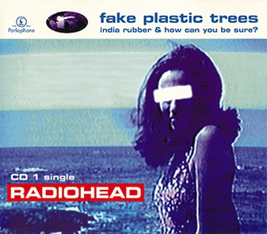
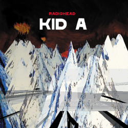
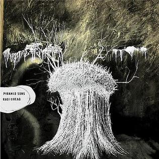
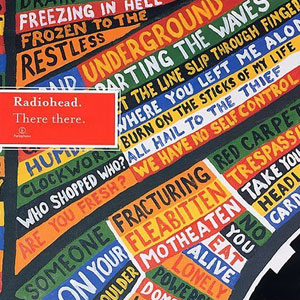
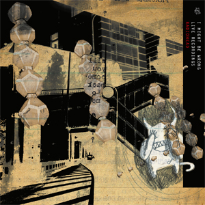

An analysis of Radiohead would be incomplete without Pablo Honey’s lead single “Creep”, their most popular song. “Creep” currently has over 2 billion streams on Spotify, and this doesn’t even account for the amount of times people have listened to it since the 90’s. The lyrics to “Creep” present a clear picture of self loathing. The song was initially quite quiet, but lead guitarist Jonny Greenwood added his iconic loud guitar “scratches” to make the song more lively. These guitar sounds are likely one of the biggest factors to not only the song’s success, but the band’s success as a whole. “Creep” propelled them to fame, but it wasn’t all sunshine and roses. People would show up to their shows to hear “Creep”, and then they would just leave. They couldn’t escape this song, so they tried to change their sound to distance themselves from it. After the OK Computer tour, they rarely played this song live, but they brought it back somewhat for their most recent tour; perhaps they judged it too harshly?

Fake Plastic Trees
“Fake Plastic Trees” is the third single from The Bends. Thom Yorke has gone on record saying that this is the song where he truly found his voice. For the longest time, he tried to sing at a lower pitch because the singers he looked up to did; however, after attending a Jeff Buckley concert, he felt so inspired that he recorded the vocals for this song very quickly, and he did such a good job that he was moved to tears. His vocal performance on this song is immaculate. He goes into falsetto during the verses effortlessly. The song begins with only his voice and acoustic guitar with more instruments slowly being introduced as the song progresses. Once the song reaches the third verse, the sound completely “explodes”. The distortion guitars fully kick in as the song reaches an emotional climax. The lyrics are stellar too; the narrator describes a girl and her boyfriend being plastic and fake. He describes them in the third person for most of the song, but once the third verse kicks in, he includes himself: “She looks like the real thing / She tastes like the real thing / My fake plastic love”. This song proved the band’s worth, and it naturally became popular amongst fans.
Let Down
“Let Down” is the fifth track off of OK Computer. The band originally planned on releasing the song as a single ahead of the release of the album, but they did not like how the music video they made turned out, so they decided to hold off until the album was released. The song feels desolate and emotional, fitting in nicely in the dystopian-feeling OK Computer. The lyrics paint a boring and bleak picture of riding on public transport with several comparisons to being crushed like a bug. The second verse takes this bug comparison further, showing a desire to “grow wings” before dismissing it as “useless”. This is another song that is popular amongst fans. The band has played it live a decent amount, but they did not do it for a while because they felt as though it was difficult to get right live with the complicated guitar parts.

How to Disappear Completely
“How to Disappear Completely” is another desolate and dystopian-feeling song, this time on the electronic Kid A. The song features a simple acoustic guitar paired with strings to create an intimate track. The lyrics revolve around advice that Michael Stipe, the lead singer of R.E.M., gave to Thom after the exhausting OK Computer tour: “I’m not really here, this isn’t really happening.” The title is based off of a book written by Doug Richmond: How to Disappear Completely and Never be Found. This song is one of Thom Yorke’s favorites, with him describing the song as “the most beautiful thing they ever did.”

Pyramid Song
“Pyramid Song” is the lead single and second track off of Amnesiac. It is a hauntingly beautiful piano ballad with moving lyrics. The song’s lyrics take cues from mythology with the narrator jumping into a river before rowing to heaven. The first and second verse are largely the same with only minor differences. When people think of Amnesiac, they usually think of this song: dark, mysterious, and moody.

There, There
“There There” is a good representation of the band going back to their older, more “rocky” sound on Hail to the Thief. The song relies on its percussion. Guitarists Ed O’Brien and Jonny Greenwood actually play the drums for this song, although Jonny switches to guitar halfway through. The song seems to be about mistrust in a messy relationship; for example, the chorus: “Just cause you feel it, doesn’t mean it’s there”. There’s belief that Thom wrote this in response to his wife suspecting him of cheating on her, but it is unconfirmed. The song relies on three different avenues of percussion throughout, as stated before, along with Thom playing guitar. After the second chorus, however, Thom sings “There, There”, and Jonny picks up his guitar. The song proceeds to build up until the end where it explodes.
Nude
“Nude” is the third track on In Rainbows, however its origin dates back to the OK Computer days. Originally known as “Big Ideas”, the band intended for this song to be on OK Computer, although they were unable to make a version they were satisfied with. They performed the song occasionally live, and it subsequently became a favorite amongst fans. Finally, during the process of making In Rainbows, the band revisited the song and crafted a version they were satisfied with. The band likes to attribute this to bassist Colin Greenwood. They felt as though the bassline he crafted helped the song greatly. The song has a jazzy and chill atmosphere with Thom’s vocals being very high pitched. He describes his vocal performance as “almost feminine”.
Separator
“Separator” is the track that closes out The King of Limbs. It, like the rest of the album, has a very unique sound. The drums are great on this track, likely due to Radiohead adding Clive Deamer to help out with the album. Simply put, the song feels like floating in a dream. This sound is likely inspired by Judith Kerr, a children’s book author Thom admires. The song is a fitting track to close out the album due to its lyrics conveying a feeling of relief and closure. The King of Limbs can be hard to approach at times, but “Separator” is a track that anyone can get behind.

True Love Waits
“True Love Waits” is the last track to their latest album: A Moon Shaped Pool. Although it didn’t release until 2016, this song was first performed live in 1995! The band only had two albums at that point! They were still touring for The Bends! The debut of this song features Thom singing haunting lyrics over an acoustic guitar. Halfway through the track, Jonny Greenwood plays synth arpeggios, greatly adding to the atmosphere of the song. In later live performances, the synth would be cut, and Thom would just perform the song by himself with an acoustic guitar. The song became very popular amongst fans, so the band would play it occasionally to end shows. The band attempted to make a studio version for both OK Computer and Kid A—the latter attempt ended up as a completely different song: “Pulk/Pull Revolving Doors”. The song would occasionally be played at shows for a while, but the band finally decided to try again while making A Moon Shaped Pool, and they crafted a version that is wildly different from how fans knew it. The lyrics remain the same, but the acoustic guitar was swapped for a beautiful piano arrangement. The lyrics are written in a way that the song could either be interpreted as a sweet song where the speaker expresses their love for their partner, or as a depressing song about a failing relationship. There are still debates over which version reigns supreme: the acoustic version or the studio version (personally, I prefer the acoustic version).